The tradeSeq workflow
Koen Van den Berge and Hector Roux de Bézieux
03/02/2020
Source:vignettes/tradeSeq.Rmd
tradeSeq.RmdtradeSeq is an R package that allows analysis of gene expression along trajectories. While it has been developed and applied to single-cell RNA-sequencing (scRNA-seq) data, its applicability extends beyond that, and also allows the analysis of, e.g., single-cell ATAC-seq data along trajectories or bulk RNA-seq time series datasets. For every gene in the dataset, tradeSeq fits a generalized additive model (GAM) by building on the mgcv R package. It then allows statistical inference on the GAM by assessing contrasts of the parameters of the fitted GAM model, aiding in interpreting complex datasets. All details about the tradeSeq model and statistical tests are described in our preprint (Van den Berge et al. 2020).
In this vignette, we analyze a subset of the data from (Paul et al. 2015). A SingleCellExperiment object of the data has been provided with the tradeSeq package and can be retrieved as shown below. The data and UMAP reduced dimensions were derived from following the Monocle 3 vignette.
In this vignette, we use tradeSeq downstream of slinghsot(Street et al. 2018) but it can be used downstream of any trajectory. In particular, if you want to use tradeSeq downstream of monocle(Qiu et al. 2017) and monocle3(Cao et al. 2019), please refer to our Monocle vignette.
Installation
To install the package, simply run
if(!requireNamespace("BiocManager", quietly = TRUE)) {
install.packages("BiocManager")
}
BiocManager::install("tradeSeq")Load data
library(tradeSeq)
library(RColorBrewer)
library(SingleCellExperiment)
library(slingshot)
# For reproducibility
RNGversion("3.5.0")
palette(brewer.pal(8, "Dark2"))
data(countMatrix, package = "tradeSeq")
counts <- as.matrix(countMatrix)
rm(countMatrix)
data(crv, package = "tradeSeq")
data(celltype, package = "tradeSeq")Fit negative binomial model
Here we fit the tradeSeq negative binomial generalized additive model (NB-GAM). Please see the fitGAM vignette for an extensive description on how to fit the models, tune its options and modify its output.
We first need to decide on the number of knots. This is done using the evaluateK function. This takes a little time to run so it is not run here.

For more explanation on the output from evaluateK, we refer users to the fitGAM vignette. Here, we pick nknots = 6.
We then fit the models by running the fitGAM function. By default, the gene-wise NB-GAM estimates one smoother for every lineage using the negative binomial distribution. Please refer to the fitGAM vignette Additional to add additional covariates to the model, speed up computation or allow for custom normalization, amongst others.
set.seed(7)
pseudotime <- slingPseudotime(crv, na = FALSE)
cellWeights <- slingCurveWeights(crv)
sce <- fitGAM(counts = counts, pseudotime = pseudotime, cellWeights = cellWeights,
nknots = 6, verbose = FALSE)The model may be hard to fit for some genes, and hence the fitting procedure may not converge for all of the genes in a dataset, especially in datasets with complex patterns and/or many lineages. You can check the convergence of each gene as shown below, where a TRUE value corresponds to a converged model fit, and a FALSE value corresponds to a model that hasn’t been able to converge fully.
table(rowData(sce)$tradeSeq$converged)##
## TRUE
## 240Within-lineage comparisons
Association of gene expression with pseudotime
A first exploration of the data analysis may consist of checking whether gene expression is associated with a particular lineage. The statistical test performed here, implemented in the associationTest function, is testing the null hypothesis that all smoother coefficients are equal to each other. This can be interpreted as testing whether the average gene expression is significantly changing along pseudotime.
assoRes <- associationTest(sce)
head(assoRes)## waldStat df pvalue meanLogFC
## Acin1 NA NA NA 0.3155838
## Actb NA NA NA 0.5610723
## Ak2 89.5676 10 6.550316e-15 0.7030388
## Alad NA NA NA 1.0476606
## Alas1 NA NA NA 1.1210974
## Aldoa NA NA NA 0.4340672Discovering progenitor marker genes
In order to discover marker genes of the progenitor or differentiated cell population, researchers may be interested in assessing differential expression between the progenitor cell population (i.e., the starting point of a lineage) with the differentiated cell type population (i.e., the end point of a lineage). The function startVsEndTest uses a Wald test to assess the null hypothesis that the average expression at the starting point of the smoother (progenitor population) is equal to the average expression at the end point of the smoother (differentiated population). The test basically involves a comparison between two smoother coefficients for every lineage. The function startVsEndTest performs a global test across all lineages by default (i.e. it compares the start and end positions for all lineages simultaneously), but you can also assess all lineages separately by setting lineages=TRUE. Below, we adopt an omnibus test across the two lineages.
startRes <- startVsEndTest(sce)We can visualize the estimated smoothers for the third most significant gene.
oStart <- order(startRes$waldStat, decreasing = TRUE)
sigGeneStart <- names(sce)[oStart[3]]
plotSmoothers(sce, counts, gene = sigGeneStart)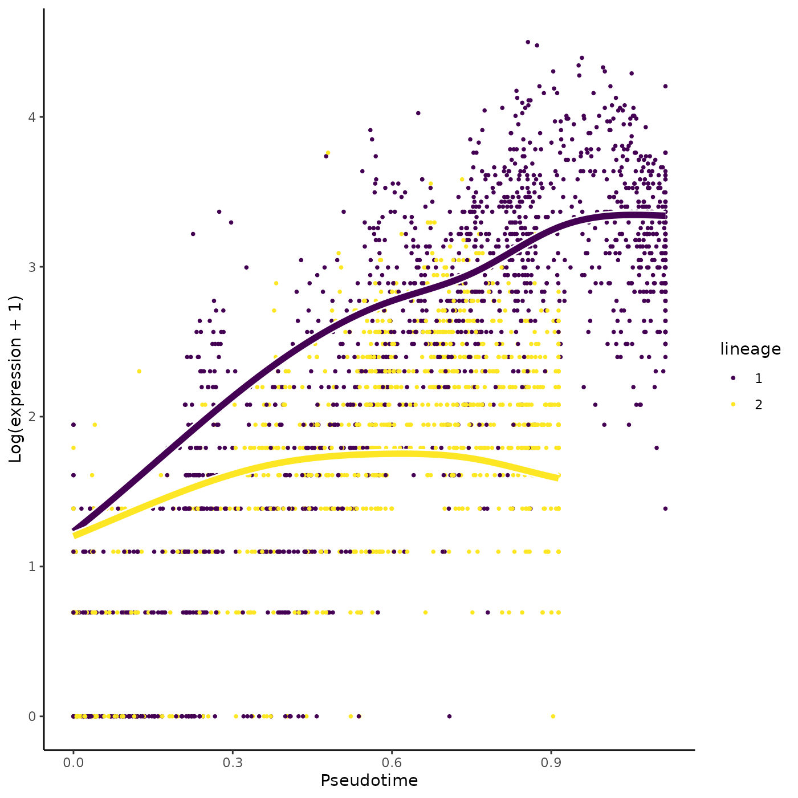
Alternatively, we can color the cells in UMAP space with that gene’s expression.
plotGeneCount(crv, counts, gene = sigGeneStart)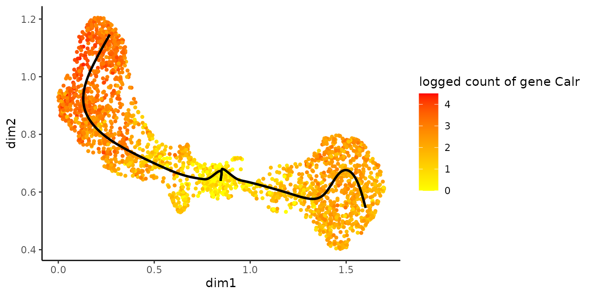
Comparing specific pseudotime values within a lineage
The startVsEndTest compares two points on a lineage, and by default it is comparing the start point with the end point. However, this is a specific form of a more general capability of the startVsEndTest to compare any two points on any lineage. If the interest lies in comparing any two custom pseudotime values, one can specify this using the pseudotimeValues arguments in startVsEndTest. For example, below we’d like to compare the expression for each gene at pseudotime values of \(0.8\) and \(0.1\).
customRes <- startVsEndTest(sce, pseudotimeValues = c(0.1, 0.8))Between-lineage comparisons
Discovering differentiated cell type markers
tradeSeq can discover marker genes for the differentiated cell types by comparing the average expression between end points of the lineage-specific smoothers. This is implemented in the diffEndTest function. By default, diffEndTest performs a global test, testing the null hypothesis that the average expression at the endpoints is equal for all lineages using a multivariate Wald test. If more than two lineages are present, one can assess all pairwise comparisons using the pairwise=TRUE argument.
endRes <- diffEndTest(sce)We can plot the most significant gene using the plotSmoothers function.
o <- order(endRes$waldStat, decreasing = TRUE)
sigGene <- names(sce)[o[1]]
plotSmoothers(sce, counts, sigGene)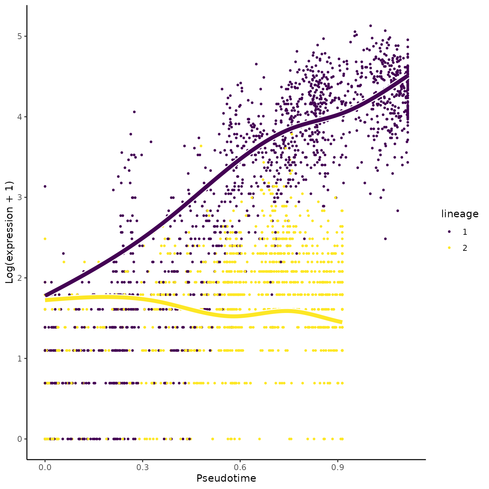
Alternatively, we can color the cells in UMAP space with that gene’s expression.
plotGeneCount(crv, counts, gene = sigGene)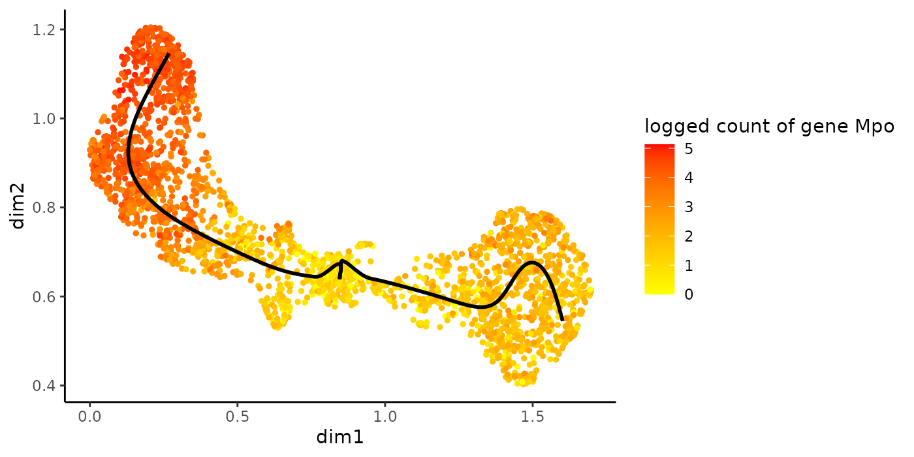
Discovering genes with different expression patterns
Asides from testing at the level of the differentiated cell type, researchers may be interested in assessing the expression pattern of a gene over pseudotime. The function patternTest implements a statistical method that checks whether the smoothed gene expression is equal along pseudotime between two or multiple lineages. In practice, we use \(100\) points, equally distributed along pseudotime, that are compared between two (or multiple) lineages, and this number can be changed using the nPoints argument.
patternRes <- patternTest(sce)
oPat <- order(patternRes$waldStat, decreasing = TRUE)
head(rownames(patternRes)[oPat])## [1] "Mpo" "Prtn3" "Car2" "Ctsg" "Elane" "Calr"
plotSmoothers(sce, counts, gene = rownames(patternRes)[oPat][4])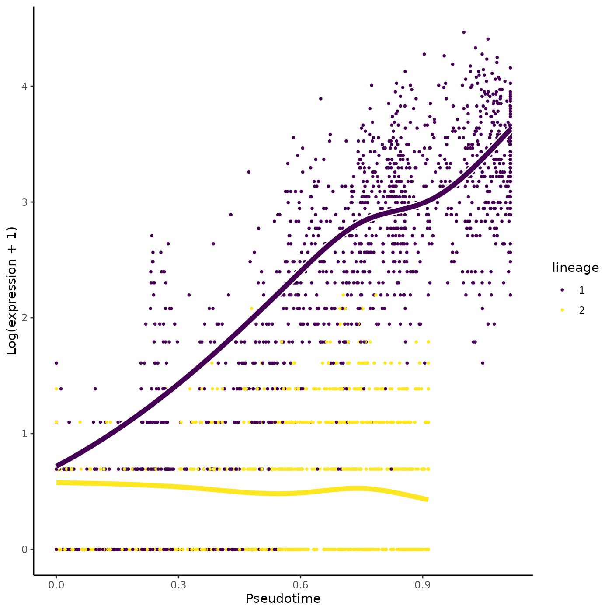
plotGeneCount(crv, counts, gene = rownames(patternRes)[oPat][4])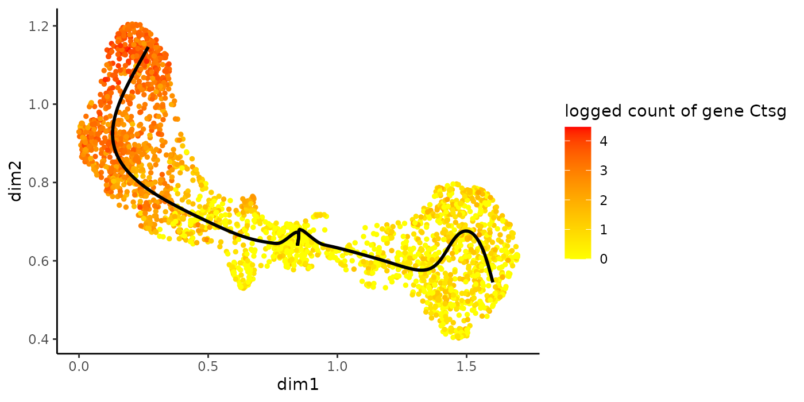
The patternTest has an argument eigenThresh that corresponds to an eigenvalue threshold for deciding on the rank of the variance-covariance matrix of the contrasts defined by the patternTest. Lower values are more lenient to adding more information but also decrease computational stability. While the default used to correspond to 1e-8, we have recently increased this to 1e-2 for increased computational stability.
Example on combining patternTest with diffEndTest results
We find genes at the top that are also ranked as DE for the differentiated cell type. What is especially interesting are genes that have different expression patterns but no different expression at the differentiated cell type level. We therefore sort the genes according to the sum of square of their rank in increasing Wald statistics for the patternTest and their rank in decreasing Wald statistics for the diffEndTest.
library(ggplot2)
patternRes$Gene <- rownames(patternRes)
patternRes$pattern <- patternRes$waldStat
patternRes <- patternRes[, c("Gene", "pattern")]
endRes$Gene <- rownames(endRes)
endRes$end <- endRes$waldStat
endRes <- endRes[, c("Gene", "end")]
compare <- merge(patternRes, endRes, by = "Gene", all = FALSE)
compare$transientScore <-
rank(-compare$end, ties.method = "min")^2 + rank(compare$pattern, ties.method = "random")^2
ggplot(compare, aes(x = log(pattern), y = log(end))) +
geom_point(aes(col = transientScore)) +
labs(x = "patternTest Wald Statistic (log scale)",
y = "diffEndTest Wald Statistic (log scale)") +
scale_color_continuous(low = "yellow", high = "red") +
theme_classic()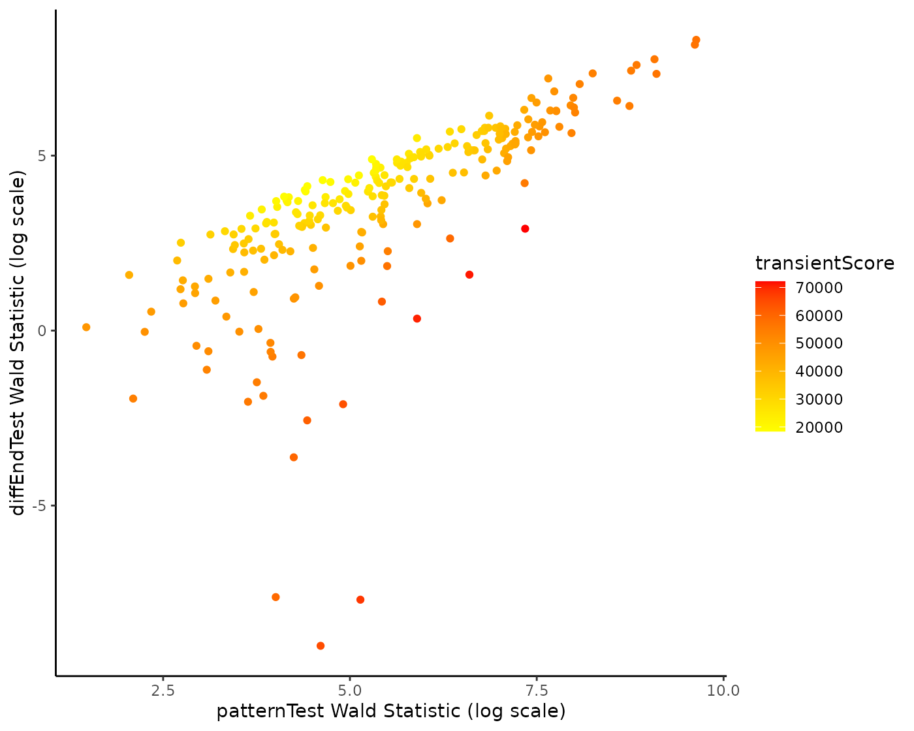
Or, we can visualize the expression in UMAP space of the top gene.
topTransient <- compare[which.max(compare$transientScore), "Gene"]
plotSmoothers(sce, counts, gene = topTransient)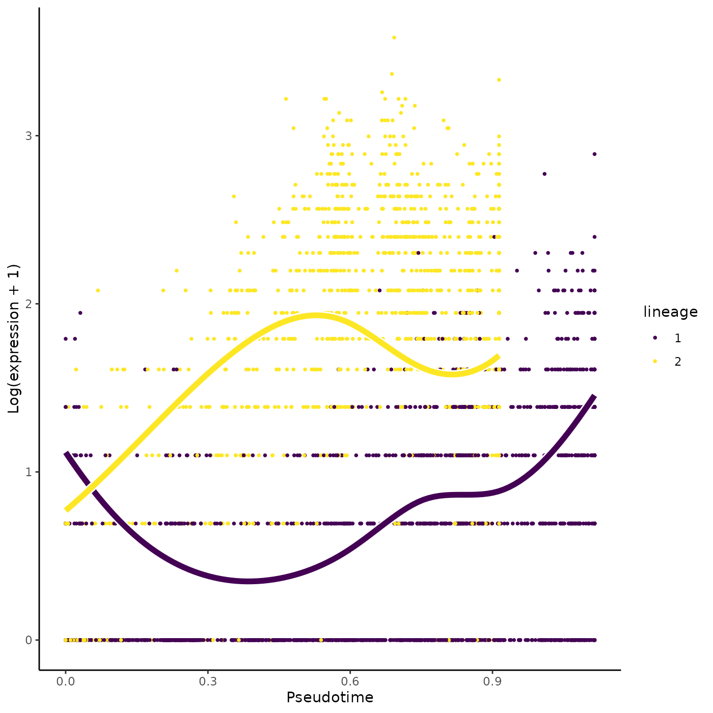
plotGeneCount(crv, counts, gene = topTransient)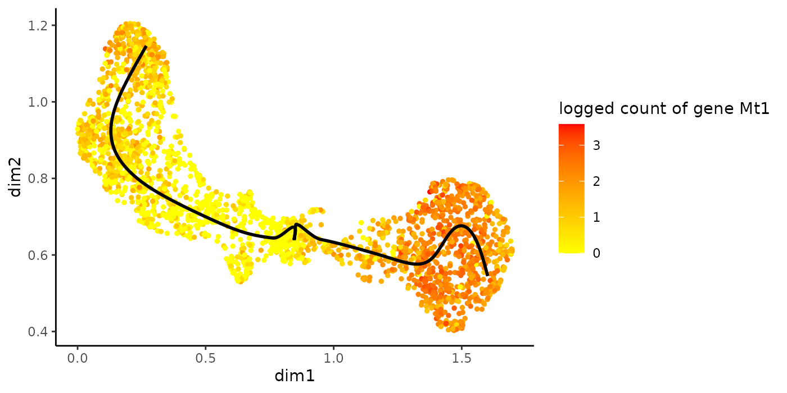
Interestingly, we recover the Irf8 gene in the top 5 genes according to that ranking.
## [1] "Mt1" "Irf8" "Nedd4" "Hint1" "Eif4g1"We can also plot the Irf8 gene.
plotSmoothers(sce, counts, gene = "Irf8")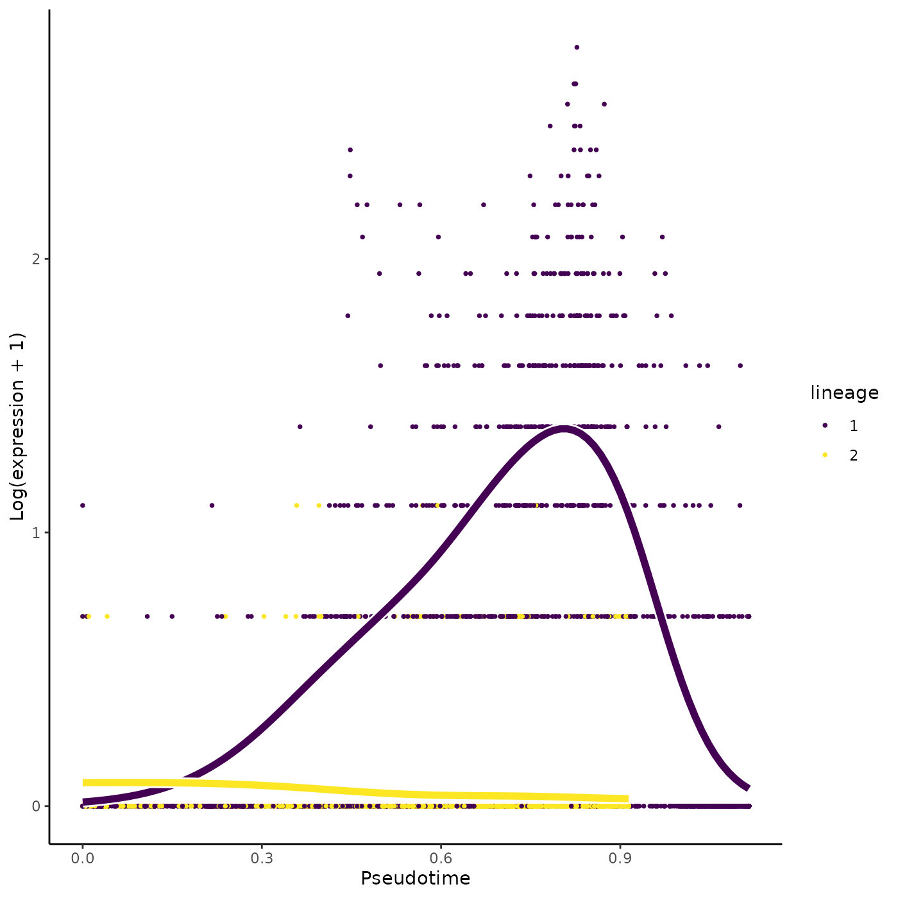
plotGeneCount(crv, counts, gene = "Irf8")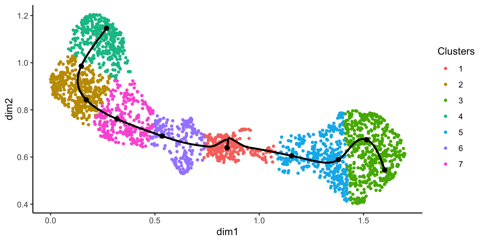
Early drivers of differentiation
Another question of interest is to find a list of genes that are differentially expressed between lineages at a particular region, e.g. around the separation of two or multiple lineages. The function earlyDETest implements a statistical method to test the null hypothesis of whether the average gene expression smoothers are equal between lineages in a region defined by two user-specified knots. Again, the knots can be visualized with the plotGeneCount function. By selecting the region covering the first two knot points to test for differential patterns between the lineages, we check which genes are behaving differently around the bifurcation point.
plotGeneCount(curve = crv, counts = counts,
clusters = apply(slingClusterLabels(crv), 1, which.max),
models = sce)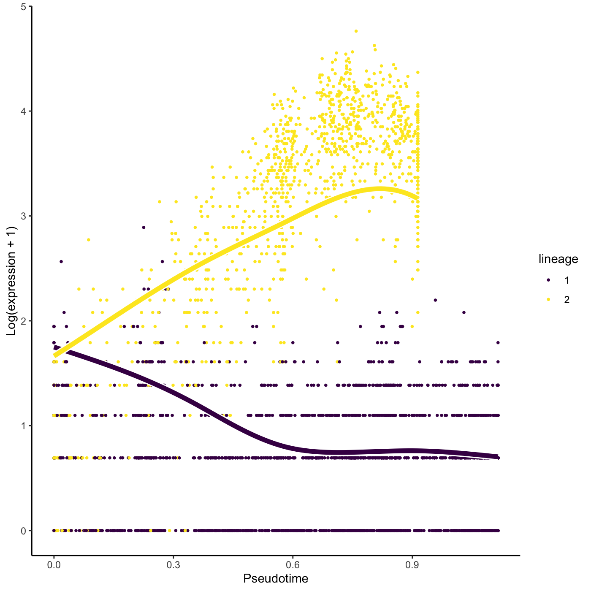
earlyDERes <- earlyDETest(sce, knots = c(1, 2))
oEarly <- order(earlyDERes$waldStat, decreasing = TRUE)
head(rownames(earlyDERes)[oEarly])## [1] "Car1" "Car2" "Klf1" "Vim" "Mt1" "Ermap"
plotSmoothers(sce, counts, gene = rownames(earlyDERes)[oEarly][2])
plotGeneCount(crv, counts, gene = rownames(earlyDERes)[oEarly][2])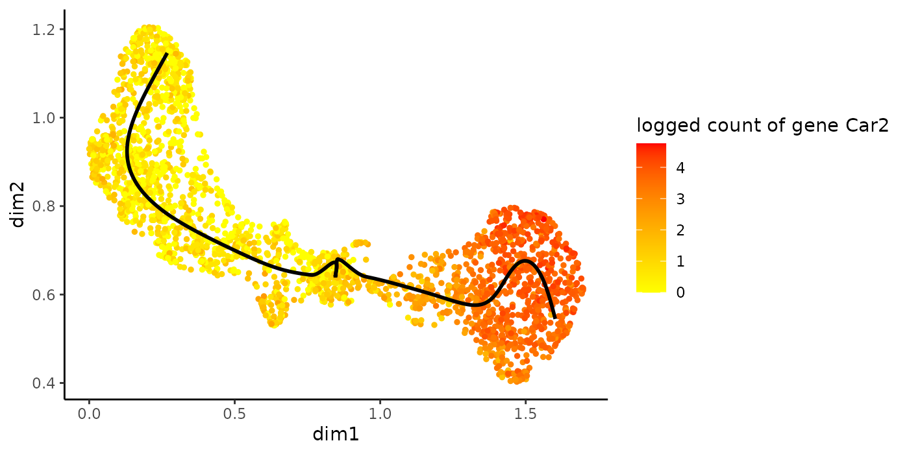
Differential expression in large datasets
In large datasets with thousands of single cells, small fold changes can become statistically significant due to the very high sample size. However, these differences may not always be biologically meaningful. To tackle this problem, all DE tests in tradeSeq have an l2fc argument which specifies the absolute value of the log2 fold-change cut-off to test against. For example, setting l2fc=log2(2) will test which genes have a fold change that is significantly higher than 2 or significantly lower than 1/2 within or between the lineages of interest.
# testing against fold change threshold of 2
start2 <- startVsEndTest(sce, l2fc = log2(2))
# testing against fold change threshold of 1.5
pat2 <- patternTest(sce, l2fc = log2(1.5))Clustering of genes according to their expression pattern
Extracting fitted values to use with any clustering method
While tradeSeq provides readily implemented functionality to cluster genes using the clusterExperiment package, users may want to cluster genes using other clustering methods. Fitted values from the tradeSeq models, which can subsequently be used for clustering, can be extracted using the predictSmooth or predictCells functions. predictCells predicts the estimated expression for each cell (i.e. it is a fitted value for that cell) on the count scale. predictSmooth, instead, returns values of the estimated smoother on a grid of pseudotimes. Either of these may be used as input to a clustering method; roughly, predictSmooth may be considered as a cleaner version of predictCells. By default predictSmooth returns a data.frame specifying the estimated smoother for each gene. A matrix containing these values, where each row is a gene, and each column is a point along the lineage on the uniform grid, can be obtained by setting tidy=FALSE in predictSmooth.
yhat <- predictCells(models = sce, gene = "Irf8")
ysmooth <- predictSmooth(models = sce, gene = "Irf8", nPoints = 40)Clustering using RSEC, clusterExperiment
tradeSeq provides the functionality to cluster genes according to their expression pattern along the lineages with the clusterExpressionPatterns function. A number of equally spaced points for every lineage are selected to perform the clustering, and the number of points can be selected with the nPoints argument. The genes argument specifies which genes you want to cluster (e.g., all genes with differential expression patterns). Here, we use 20 points along each lineage to cluster the first 40 genes in the dataset. The clustering itself occurs by the clusterExperiment package (Risso et al. 2018), hence the user may select any clustering algorithm that’s built into that package, or custom clustering algorithms implemented by the user. For a list of built-in clustering algorithms within clusterExperiment, run clusterExperiment::listBuiltInFunctions() on the command line.
library(clusterExperiment)
nPointsClus <- 20
clusPat <- clusterExpressionPatterns(sce, nPoints = nPointsClus,
genes = rownames(counts)[1:100])## 36 parameter combinations, 36 use sequential method, 36 use subsampling method
## Running Clustering on Parameter Combinations...
## done.
clusterLabels <- primaryCluster(clusPat$rsec)The first 4 clusters can be visualized using the normalized expression upon which the clustering is based. Please note that the code below would only works for a trajectory with two lineages. Modify the code appropriately if using with a dataset with 3 lineages or more.
cUniq <- unique(clusterLabels)
cUniq <- cUniq[!cUniq == -1] # remove unclustered genes
for (xx in cUniq[1:4]) {
cId <- which(clusterLabels == xx)
p <- ggplot(data = data.frame(x = 1:nPointsClus,
y = rep(range(clusPat$yhatScaled[cId, ]),
nPointsClus / 2)),
aes(x = x, y = y)) +
geom_point(alpha = 0) +
labs(title = paste0("Cluster ", xx), x = "Pseudotime", y = "Normalized expression") +
theme_classic() +
theme(plot.title = element_text(hjust = 0.5))
for (ii in 1:length(cId)) {
geneId <- rownames(clusPat$yhatScaled)[cId[ii]]
p <- p +
geom_line(data = data.frame(x = rep(1:nPointsClus, 2),
y = clusPat$yhatScaled[geneId, ],
lineage = rep(0:1, each = nPointsClus)),
aes(col = as.character(lineage), group = lineage), lwd = 1.5)
}
p <- p + guides(color = FALSE) +
scale_color_manual(values = c("orange", "darkseagreen3"),
breaks = c("0", "1"))
print(p)
}


Contributing and requesting
A number of tests have been implemented in tradeSeq, but researchers may be interested in other hypotheses that current implementations may not be able to address. We therefore welcome contributions on GitHub on novel tests based on the tradeSeq model. Similarly, you may also request novel tests to be implemented in tradeSeq by the developers, preferably by adding an issue on the GitHub repository. If we feel that the suggested test is widely applicable, we will implement it in tradeSeq.
Session
## R version 4.0.3 (2020-10-10)
## Platform: x86_64-pc-linux-gnu (64-bit)
## Running under: Ubuntu 20.04.1 LTS
##
## Matrix products: default
## BLAS/LAPACK: /usr/lib/x86_64-linux-gnu/openblas-pthread/libopenblasp-r0.3.8.so
##
## Random number generation:
## RNG: Mersenne-Twister
## Normal: Inversion
## Sample: Rounding
##
## locale:
## [1] LC_CTYPE=en_US.UTF-8 LC_NUMERIC=C
## [3] LC_TIME=en_US.UTF-8 LC_COLLATE=en_US.UTF-8
## [5] LC_MONETARY=en_US.UTF-8 LC_MESSAGES=C
## [7] LC_PAPER=en_US.UTF-8 LC_NAME=C
## [9] LC_ADDRESS=C LC_TELEPHONE=C
## [11] LC_MEASUREMENT=en_US.UTF-8 LC_IDENTIFICATION=C
##
## attached base packages:
## [1] parallel stats4 stats graphics grDevices utils datasets
## [8] methods base
##
## other attached packages:
## [1] clusterExperiment_2.10.1 ggplot2_3.3.3
## [3] slingshot_1.8.0 princurve_2.1.6
## [5] SingleCellExperiment_1.12.0 SummarizedExperiment_1.20.0
## [7] Biobase_2.50.0 GenomicRanges_1.42.0
## [9] GenomeInfoDb_1.26.2 IRanges_2.24.1
## [11] S4Vectors_0.28.1 BiocGenerics_0.36.0
## [13] MatrixGenerics_1.2.1 matrixStats_0.58.0
## [15] RColorBrewer_1.1-2 tradeSeq_1.5.09
## [17] knitr_1.31
##
## loaded via a namespace (and not attached):
## [1] uuid_0.1-4 VGAM_1.1-5 systemfonts_1.0.1
## [4] NMF_0.23.0 plyr_1.8.6 igraph_1.2.6
## [7] lazyeval_0.2.2 splines_4.0.3 BiocParallel_1.24.1
## [10] densityClust_0.3 rncl_0.8.4 fastICA_1.2-2
## [13] gridBase_0.4-7 digest_0.6.27 foreach_1.5.1
## [16] htmltools_0.5.0 viridis_0.5.1 fansi_0.4.1
## [19] magrittr_2.0.1 memoise_1.1.0 cluster_2.1.0
## [22] doParallel_1.0.16 limma_3.46.0 annotate_1.68.0
## [25] docopt_0.7.1 pkgdown_1.6.1 prettyunits_1.1.1
## [28] colorspace_2.0-0 blob_1.2.1 ggrepel_0.9.1
## [31] textshaping_0.3.1 xfun_0.19 dplyr_1.0.4
## [34] sparsesvd_0.2 crayon_1.4.1 RCurl_1.98-1.2
## [37] genefilter_1.72.1 phylobase_0.8.10 survival_3.2-7
## [40] iterators_1.0.13 ape_5.4-1 glue_1.4.2
## [43] registry_0.5-1 gtable_0.3.0 zlibbioc_1.36.0
## [46] XVector_0.30.0 DelayedArray_0.16.2 kernlab_0.9-29
## [49] Rhdf5lib_1.12.1 HDF5Array_1.18.1 scales_1.1.1
## [52] pheatmap_1.0.12 DBI_1.1.1 edgeR_3.32.1
## [55] rngtools_1.5 Rcpp_1.0.5 viridisLite_0.3.0
## [58] xtable_1.8-4 progress_1.2.2 bit_4.0.4
## [61] httr_1.4.2 FNN_1.1.3 ellipsis_0.3.1
## [64] pkgconfig_2.0.3 XML_3.99-0.5 farver_2.1.0
## [67] locfit_1.5-9.4 utf8_1.1.4 softImpute_1.4
## [70] AnnotationDbi_1.52.0 howmany_0.3-1 tidyselect_1.1.0
## [73] labeling_0.4.2 rlang_0.4.10 reshape2_1.4.4
## [76] munsell_0.5.0 tools_4.0.3 RSQLite_2.2.3
## [79] generics_0.1.0 ade4_1.7-16 evaluate_0.14
## [82] stringr_1.4.0 yaml_2.2.1 ragg_1.1.1
## [85] bit64_4.0.5 fs_1.5.0 DDRTree_0.1.5
## [88] purrr_0.3.4 RANN_2.6.1 pbapply_1.4-3
## [91] nlme_3.1-151 monocle_2.18.0 slam_0.1-48
## [94] xml2_1.3.2 debugme_1.1.0 compiler_4.0.3
## [97] tibble_3.1.0 RNeXML_2.4.5 stringi_1.5.3
## [100] highr_0.8 desc_1.2.0 RSpectra_0.16-0
## [103] lattice_0.20-41 Matrix_1.3-0 HSMMSingleCell_1.10.0
## [106] vctrs_0.3.6 rhdf5filters_1.2.0 pillar_1.5.0
## [109] lifecycle_0.2.0 combinat_0.0-8 zinbwave_1.12.0
## [112] bitops_1.0-6 irlba_2.3.3 R6_2.5.0
## [115] gridExtra_2.3 codetools_0.2-18 MASS_7.3-53
## [118] assertthat_0.2.1 rhdf5_2.34.0 pkgmaker_0.32.2
## [121] rprojroot_2.0.2 withr_2.3.0 qlcMatrix_0.9.7
## [124] GenomeInfoDbData_1.2.4 locfdr_1.1-8 mgcv_1.8-33
## [127] hms_1.0.0 grid_4.0.3 tidyr_1.1.3
## [130] rmarkdown_2.7 Rtsne_0.15References
Cao, Junyue, Malte Spielmann, Xiaojie Qiu, Xingfan Huang, Daniel M. Ibrahim, Andrew J. Hill, Fan Zhang, et al. 2019. “The Dynamics and Regulators of Cell Fate Decisions Are Revealed by Pseudo-Temporal Ordering of Single Cells.” Nature.
Paul, Franziska, Ya’ara Arkin, Amir Giladi, Diego Adhemar Jaitin, Ephraim Kenigsberg, Hadas Keren-Shaul, Deborah Winter, et al. 2015. “Transcriptional Heterogeneity and Lineage Commitment in Myeloid Progenitors.” Cell 163 (7): 1663–77. https://doi.org/10.1016/J.CELL.2015.11.013.
Qiu, Xiaojie, Qi Mao, Ying Tang, Li Wang, Raghav Chawla, Hannah A Pliner, and Cole Trapnell. 2017. “Reversed graph embedding resolves complex single-cell trajectories.” Nature Methods 14 (10): 979–82. https://doi.org/10.1038/nmeth.4402.
Risso, Davide, Liam Purvis, Russell B. Fletcher, Diya Das, John Ngai, Sandrine Dudoit, and Elizabeth Purdom. 2018. “clusterExperiment and RSEC: A Bioconductor package and framework for clustering of single-cell and other large gene expression datasets.” Edited by Aaron E. Darling. PLOS Computational Biology 14 (9): e1006378. https://doi.org/10.1371/journal.pcbi.1006378.
Street, Kelly, Davide Risso, Russell B. Fletcher, Diya Das, John Ngai, Nir Yosef, Elizabeth Purdom, and Sandrine Dudoit. 2018. “Slingshot: cell lineage and pseudotime inference for single-cell transcriptomics.” BMC Genomics 19 (1): 477. https://doi.org/10.1186/s12864-018-4772-0.
Van den Berge, Koen, Hector Roux de Bézieux, Kelly Street, Wouter Saelens, Robrecht Cannoodt, Yvan Saeys, Sandrine Dudoit, and Lieven Clement. 2020. “Trajectory-based differential expression analysis for single-cell sequencing data.” Nature Communications 11 (1): 1201. https://doi.org/10.1038/s41467-020-14766-3.